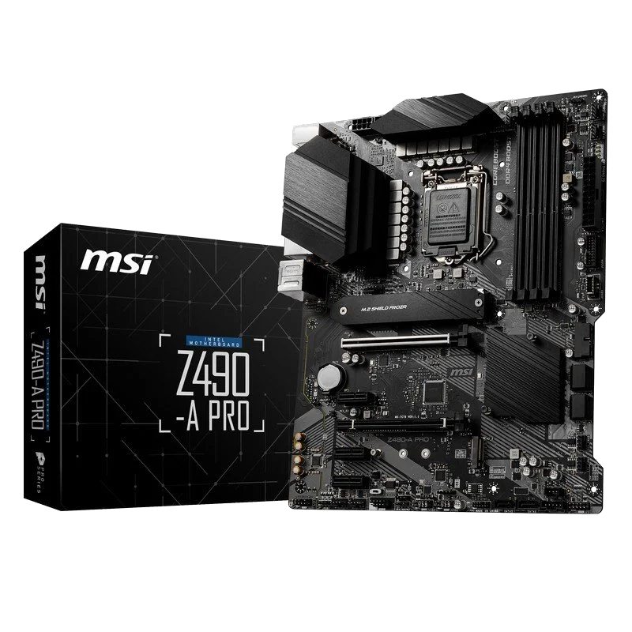
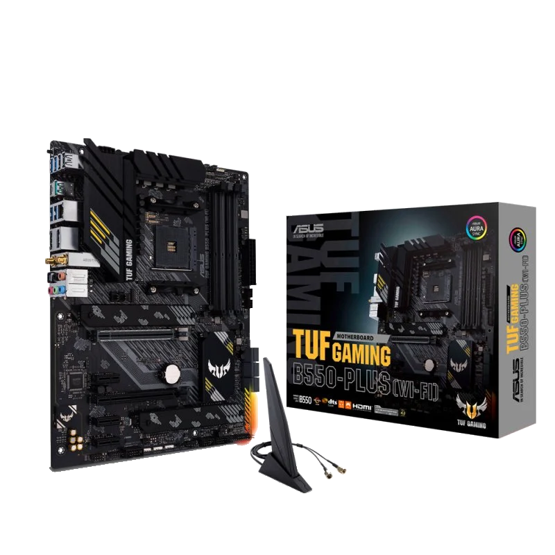

Plaques Base per a Intel

MSI Z490 A PRO
Placa Base de MSI compatible amb processadors d'Intel de 8è i 9a generació. Amb un disseny simple i minimalista.
CaracterístiquesMSI MAG B560M BAZOOKA
Placa Base de MSI compatible amb processadors d'Intel de 8è i 9a generació. Amb un disseny més decoratiu.
CaracterístiquesPlaques Base per a AMD

Asus TUF GAMING B550-PLUS WI-FI
Placa Base d'Asus compatible amb processadors d'AMD compatible amb els processadors de 3r i 4a generació (3000, 4000 i 5000).
Com a plus, incorpora una antena Wi-Fi.
Gigabyte B550M AORUS PRO P
Placa Base de Gigabyte compatible amb processadors d'AMD compatible amb els processadors de 3r i 4a generació (3000, 4000 i 5000).
Característiques